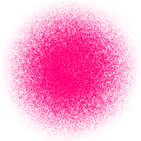

my
work
about
me
Hey, I am a Year 1 Computer Science student at the National University of Singapore. I am passionate about design, especially digital art and UI/UX. I built this website because I wanted a space that really felt like my own. Web design is a new medium for me, and so far, I find it surprisingly fun to work with.
Through building this site, I learnt so much more about web coding and design using HTML and CSS. I designed it to feel refreshing but still comforting — like a small personal space you can wander through. Hopefully, you'll have a fun time looking around!
contact
me
-

 yoyoricc
yoyoricc
-
 Yorick Chew
Yorick Chew